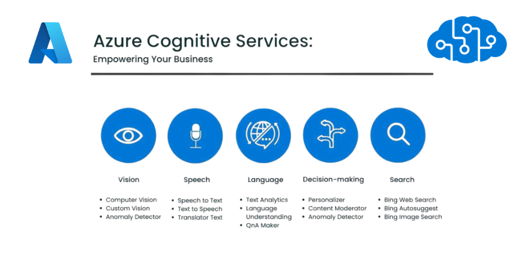
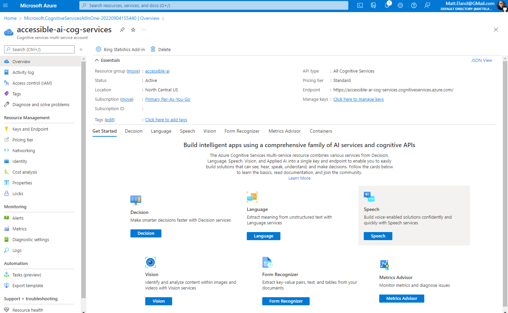
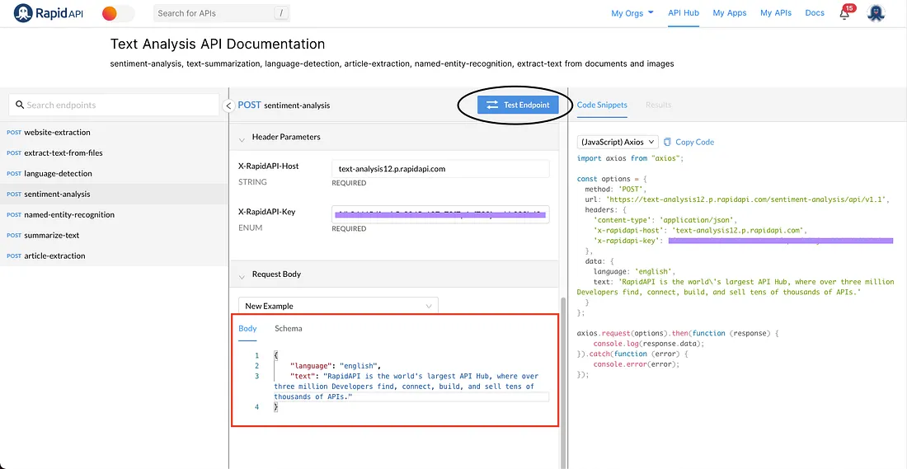

Building a Sentiment Analysis Web App Using Azure Cognitive Services
In today’s hyper-connected digital economy, understanding what people are saying about your product, brand, or service is no longer optional — it’s a business-critical requirement. From consumer electronics brands monitoring product reviews to political campaigns assessing public sentiment in real time, the ability to gauge audience emotions offers invaluable strategic insights. With Artificial Intelligence (AI) and Natural Language Processing (NLP) technologies advancing rapidly, sentiment analysis has emerged as one of the most accessible and impactful AI use cases across industries.
Microsoft Azure Cognitive Services offers developers, data analysts, and startups an enterprise-grade toolkit to integrate AI-powered sentiment analysis into web and mobile applications without the need for extensive machine learning expertise. This article serves as a comprehensive guide to building a web-based sentiment analysis application using Azure’s Text Analytics API — covering architecture, development, deployment, use cases, and SEO-optimized strategies.
What is Sentiment Analysis?
Sentiment analysis, often referred to as opinion mining, is an NLP technique that interprets and classifies emotions expressed in textual data. It identifies whether the tone of a given text is positive, negative, neutral, or mixed. Common applications include customer feedback analysis, social media monitoring, brand reputation management, and market research. By integrating sentiment analysis into your digital tools, you automate the interpretation of human emotions at scale — saving both time and resources while improving decision-making.
Why Use Azure Cognitive Services for Sentiment Analysis?
Microsoft Azure’s Cognitive Services suite offers pre-trained AI models that developers can access through simple APIs, eliminating the need for specialized ML knowledge. Azure’s Text Analytics API includes advanced capabilities like:
- Sentiment Analysis
- Language Detection
- Key Phrase Extraction
- Named Entity Recognition
- Opinion Mining (advanced sentiment detection within sentences)
The platform is highly scalable, secure, supports 120+ languages, and integrates seamlessly via REST APIs or SDKs. Its built-in compliance and data privacy policies make it ideal for enterprise use.
Azure Cognitive Services dashboard where you manage your AI services
Prerequisites
Before you begin, you’ll need:
- An Azure account (free or paid)
- A Text Analytics resource created in Azure portal
- Basic JavaScript, Python, or HTML knowledge
- Experience with REST APIs or an Azure SDK (Node.js, Python, etc.)
- Frontend framework like React.js or Flask (optional)
Step-by-Step Guide to Building the App
1. Set Up Azure Cognitive Services
Log into Azure Portal, create a new Cognitive Services resource, select ‘Text Analytics’, and note your endpoint and API key. These will authenticate your application requests.
2. Choose a Tech Stack
For this tutorial:
- Frontend: React.js
- Backend: Node.js + Axios (or fetch)
- API calls: Azure REST API
3. Frontend React Component
Create a simple React component with a text input, a button, and a result display area. Use Axios to post user input to your backend route for analysis.
Example React-based sentiment analysis interface
4. Backend API Integration (Node.js Example)
Use Express.js to create an API route that connects with Azure’s Text Analytics API, sending the user input as JSON and returning the sentiment response.
5. Test and Optimize
Run both your frontend and backend servers, input test data, and verify the sentiment classification results — typically positive, negative, or neutral.
Real-World Use Cases
A sentiment analysis app like this can be adapted for:
- E-commerce: Classify product reviews automatically
- Social Media Analytics: Monitor public opinions in real time
- Customer Support: Prioritize tickets based on sentiment
- Finance: Track market sentiment via news headlines and tweets
Enhancing Your App
You can extend functionality by adding:
- Opinion mining for aspect-based sentiment
- Chart.js or Recharts for data visualization
- Multilingual support using Azure’s language detection API
- Semantic SEO integration for your app website (structured data, meta tags)
Conclusion
Building a sentiment analysis web app with Azure Cognitive Services empowers developers to unlock the power of AI without diving into complex machine learning models. It’s scalable, reliable, and easy to deploy. Whether you’re an independent developer, student, or enterprise innovator, integrating AI-based sentiment analysis tools adds tremendous value to your digital products and business decision-making processes.
Author
Muhammad Daud
MLSA, Campus Lead
President, ICT Club MNS UET Multan